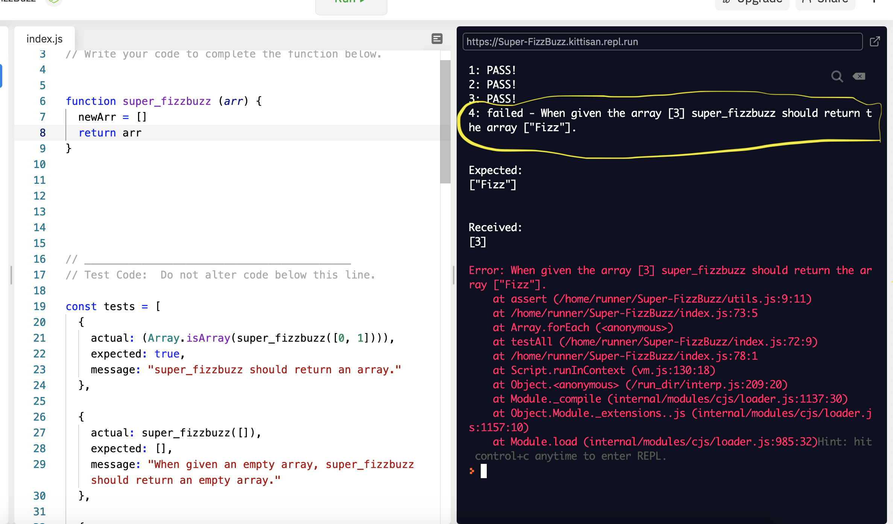

It was difficult for me to complete the Kata: FizzBuzz (Super Edition) in 4 hours. The most challenging part of Super FizzBuzz was with the testing error displayed. See the image below:
"4: failed - When given the array [3] super_fizzbuzz should return the array ["Fizz"]".

So when the value of arr equals [3] my function super_fizzbuzz should then return ['Fizz'].
The problem was knowing if the arr value was equal to [3]. First step was to check, then return the array ['Fizz']. My function had to do this:
If (arr === [3])
Return [‘Fizz’]
Going through error messages and to breaking down step by step using pseudocode, research online and books, using console.log and ask for help.
Using pseudocode to sort out the structure of my code and testing my code to discover error messages. These two things help with understanding my code and how to move forward. Also duck duck go for more details on how to use a Function and create an Array. Using the console.log to check if my code is working as expected.
When stuck with my code and after doing testing and research, I would reach out to my fellow team members and facilitator.
I have had a go at using the Rubber Duck Debugging method to solve my coding issues. It's a method by using an object like a rubber duck and relaying the steps to this object in vein that it will help shine a light on the erroneous coding logic. This method was difficult in the public library and didn't seem to help, We don't seem to understand each other when we talk, but he might understand you.
Rubber Duck Debugging from the Book The Pragmatic Programmer